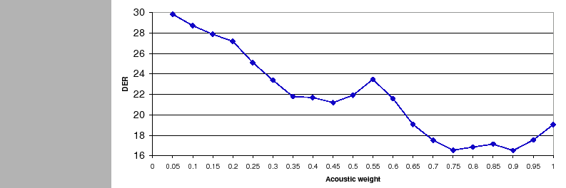
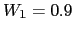
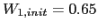
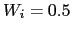
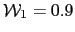
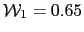
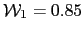
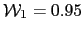
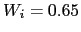

Next: Algorithms Agglomeration Performance Up: Individual Algorithms Performance Previous: Frame and Segment Purification Contents
In order to test the effectiveness of the automatic weighting scheme for multi-stream feature sets only the MDM system with TDOA values was used. By setting the weights automatically each meeting can compute the optimum relationship between the acoustic and TDOA features. In fact, given that TDOA features determine the identity of the speaker by his/her physical location in the room, it can suffer from modeling errors whenever the speakers move around the room, which in the RT meetings only happens in a few cases.
|  |
The alternative to automatically setting the weights is to define a relative weight by using a development set and applying it to all meetings in the test set. This alternative lacks from the flexibility to consider all meetings different, and can diverge from the development to the test set, lacking on robustness to changes. Figure 6.13 shows the DER on the development set for the TDOA-MDM system, where the relative weight between TDOA and acoustic features has been set a priory. It is easily observable the big dynamic range of DER scores obtained along the various possible weights. Given the computed values, the optimum working weight is at  with a DER of 16.49%.
By using the proposed automatic weighting it computes the weights
after the  BIC values are obtained for all cluster pairs.
This could be done after each iteration of the agglomerative
clustering and therefore a decision must be made wether the
initial iteration weights are kept throughout the process or they
are allowed to readapt by using the new
BIC values are obtained for all cluster pairs.
This could be done after each iteration of the agglomerative
clustering and therefore a decision must be made wether the
initial iteration weights are kept throughout the process or they
are allowed to readapt by using the new  BIC pairs.
BIC pairs.
It was observed in figure 5.13 in section 5.3.2 that the weights usually converge to a stable value after several agglomerative clustering iterations. It must be seen wether these weights obtain an appropriate DER result. Figure 6.14 shows the evolution of the DER computed using the development set by changing the number of iterations in which the weights are reestimated. The DER decreases as the number of iterations increase, with the exception of iteration 3, and stabilizing around iteration 9. This indicates that the system tends to obtain better values for the weight as it progresses, and therefore there is no need in the final system to tune for the number of iterations. Instead, it was allowed to adapt a new weight as long as the stopping criterion did not stop the system.
On final parameter of the weighting algorithm is the initial weights to be used in the system initialization and the initial segmentation, before the first clustering occurs. In order to study the effect of the chosen initial weight in figure 6.15 the DER variation is computed for the development set using the automatic weighting algorithm not limiting the number of adaptation iterations and setting the initial weights. The final system DER for the development data changes depending on the initial weight setting, being the optimum setting at . This variation is thought minimal compared to the DER variation observed when using a manual setting and shown in figure 6.13. In fact, by selecting a non informative initial weight  there is only a 0.57% absolute DER loss, which might be acceptable for many applications where the nature of the data changes rapidly and it becomes a burden to tune the system every time.
In table 6.16 the DER is computed for several implementations. The mono-stream system uses only acoustic features, the other systems use both acoustics and TDOA values, differing in the way that the weights are found. The system ``inv-entropy'' performs a frame-wise inverse entropy weight estimation as described in Misra et al. (2003). The ``manual weights'' system finds the optimum weights using a development set and is set to . The other two lines show results using the automatic weighting with different initial weights, , optimum in the development set for the manual case and  optimum in the development set for the automatic weight setting.
Given these results it is seen that using inverse entropy does not achieve good results. In average the entropy method assigns higher weight to the TDOA values while all optimum performance points do otherwise. Also, observe that all the multi-stream methods (except inverse entropy) greatly outperform the mono-stream baseline system.
Automatic weighting obtains, in its optimum point, a relative 14.1% improvement versus manual weighting in the development set. Manually setting the weight achieves the best performance in the test set, although values for the DER around that point obtain much higher errors (DER = 22.85 for  and DER = 22.29 for ) which makes it doubtful of its robustness in other data sets. On the other hand, the values for the automatic weighting algorithm in the test set remain stable (DER = 20.5% in average) for most observed weights.
Such system could be expanded to compute the weights for more than 2 streams, becoming it much easier to automatically do it than having to perform a sweep of possible values using a development set. Even in performance is not improved in all cases, by using the automatic algorithm it becomes much easier to adapt the system to new domains quickly, which follows one of the thesis objectives.
Given these results, the automatic setting of the relative weights between features is set to use an unlimited number of adaptation iterations, with an initial weight . This is the first algorithm to be added to the baseline system in the following chapter as it only affects one of the systems evaluated.
user 2008-12-08